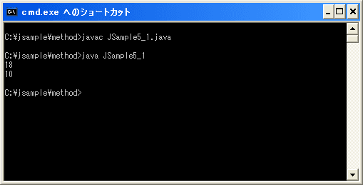
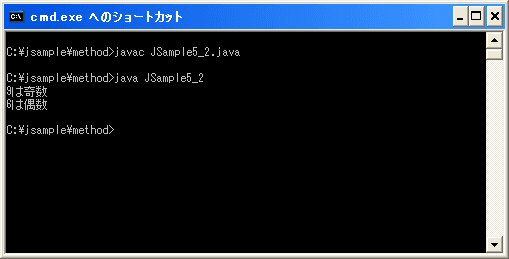

戻り値を使ってメソッドから値を返す
メソッドを呼び出す時には引数を使って呼び出し元からメソッドへ値を渡すことができましたが、今度はメソッド内の処理が終了してメソッド呼び出し元へ処理が戻る時に、呼び出し元へ何らかの値を返す方法を確認します。
メソッドから呼び出し元へ返す値を戻り値といいます。戻り値がある場合の書式は次のとおりです。
public static void main(String args[]){
戻り値のデータ型 変数 = メソッド名();
}
修飾子 戻り値のデータ型 メソッド名(){
/* メソッド内で実行する処理 */
return 戻り値;
}
※上記では引数に関係する部分は省略しています。
戻り値としてメソッド呼び出し元に値を返す場合、まずメソッドの定義の時にメソッド名の前に戻り値のデータ型を記述します。例えばintなどの基本データ型やStringなどのクラス名を記述します。戻り値を返さない場合にはデータ型としてvoidを記述します。
戻り値がint型の場合:
private static int test(){
/* メソッド内で実行する処理 */
}
戻り値を返さない場合:
private static void test(){
/* メソッド内で実行する処理 */
}
return文
次に戻り値の指定方法です。戻り値ははreturn文を使って記述します。return文の書式は次のとおりです。
return; return 式;
return文が実行された時点でメソッドを終了し呼び出し元へ処理が帰ります。return文はメソッド内の任意の位置に記述できますが、return文が実行されるとそれ以降にメソッド内に書かれた処理は実行されませんので注意して下さい。
そして戻り値としてメソッドの呼び出し元に値を返す場合は、return文の後に式として戻り値を記述します。式は単に値や変数を記述した場合にはその値が、計算式などを記述した場合にはその式を評価した結果が戻り値として呼び出し元に返されます。
return 10; /* 戻り値は10 */ return 4 * 5; /* 戻り値は20 */
戻り値としてreturn文の後に指定する値のデータ型はメソッド名の前に記述したデータ型である必要があります。またreturn文で指定できる値は一つだけなので戻り値として呼び出し元に返すことができる値も一つだけです。
戻された値の処理
戻り値として値が呼び出し元に返されると、メソッドを呼び出した文そのものが戻り値として評価されます。よって、出力したり変数に代入したりすることができます。
public static void main(String args[]){
/* 戻り値を直接出力した場合 */
System.out.println(test());
/* 戻り値を変数に代入した場合 */
int num = test();
}
private static int test(){
return 10;
}
メソッドに戻り値のデータ型としてvoid以外を指定しているにも関わらずreturn文を使って戻り値を返さなかった場合もコンパイルエラーとなりますが、返された戻り値をメソッド呼び出し側で利用しなくても構いません。
サンプル
では簡単な例で試しておきます。
class JSample5_1{
public static void main(String args[]){
int kekka;
kekka = bai(9);
System.out.println(kekka);
kekka = bai(5);
System.out.println(kekka);
}
private static int bai(int n){
return n * 2;
}
}
コンパイル後に実行すると次のように表示されます。

今回のサンプルではメソッドに渡された値をメソッド内で2倍し、その結果を呼び出し元に返しています。
ではもう一つ簡単な例で試しておきます。
class JSample5_2{
public static void main(String args[]){
int num;
String kekka;
num = 9;
kekka = hantei(num);
System.out.println(num + "は" + kekka);
num = 6;
kekka = hantei(num);
System.out.println(num + "は" + kekka);
}
private static String hantei(int n){
if (n % 2 == 0){
return "偶数";
}else{
return "奇数";
}
}
}
コンパイル後に実行すると次のように表示されます。

今回はメソッド内で条件分岐を行い、戻り値で返す値を二通り記述しています。このようにreturn文はメソッド内で複数記述しても構いません。ただ、いずれかのreturn文が実行されるとその時点でメソッドを終了するのでreturn文が実行されるのは一つだけです。
( Written by Tatsuo Ikura )

著者 / TATSUO IKURA
初心者～中級者の方を対象としたプログラミング方法や開発環境の構築の解説を行うサイトの運営を行っています。